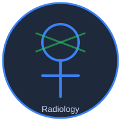

تعلم الأشعة صح
منصة تعليمية متخصصة في الأشعة التشخيصية لطلاب الطب وأطباء الامتياز وأخصائيي وفنيي الأشعة - X-Ray, CT, MRI, Ultrasound مع حالات عملية وأطالس إشعاعية

أ.د/ ممدوح محفوظ
أستاذ الأشعة التشخيصية - كلية الطب، جامعة القاهرة (قصر العيني)
من أبرز رواد تعليم الأشعة التشخيصية في مصر والعالم العربي
آلاف المحاضرات التعليمية للمبتدئين والمتقدمين في جميع أنواع التصوير الطبي
X-Ray | CT Scan | MRI | Ultrasound | Doppler
مرجع أساسي لأطباء الماجستير والدكتوراه والزمالة في الأشعة
شرح مبسط بالفيديو لجميع أنواع الأشعة مع حالات عملية من الواقع
أطالس وملازم PDF شاملة لتشريح الأشعة وبروتوكولات التصوير
حالات عملية حقيقية مع التشخيص والتحليل خطوة بخطوة
انضم لمئات الأطباء والفنيين واحصل على أفضل شرح في الأشعة التشخيصية